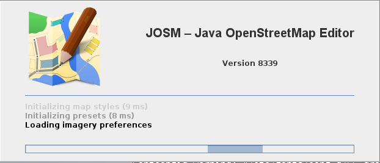
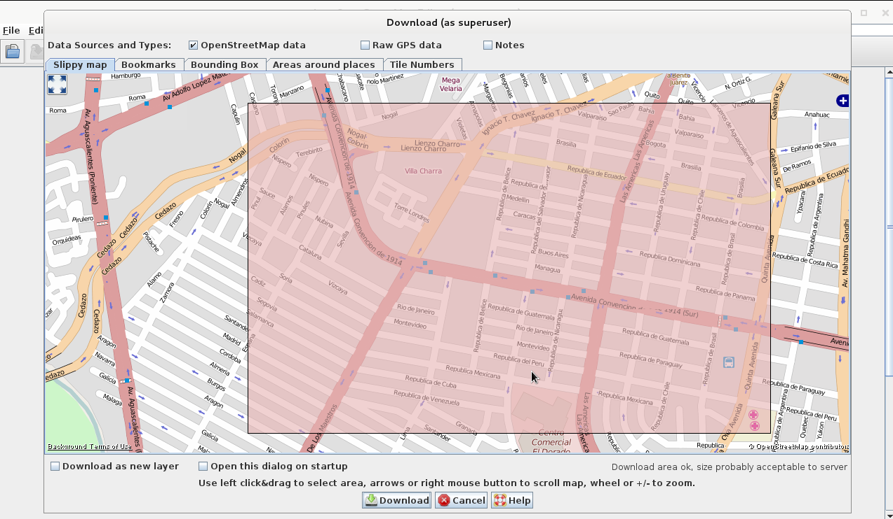
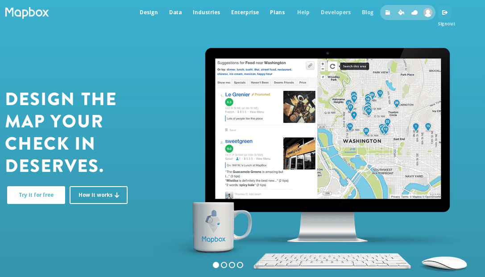
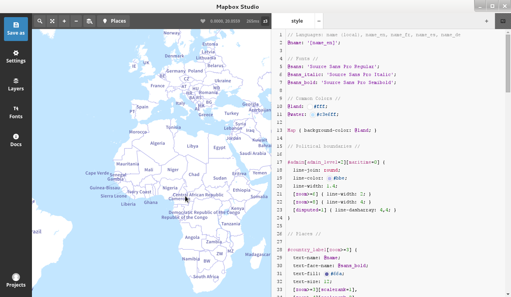
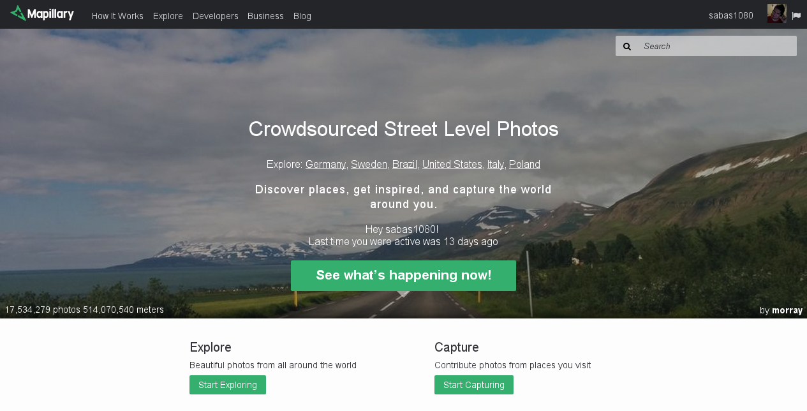
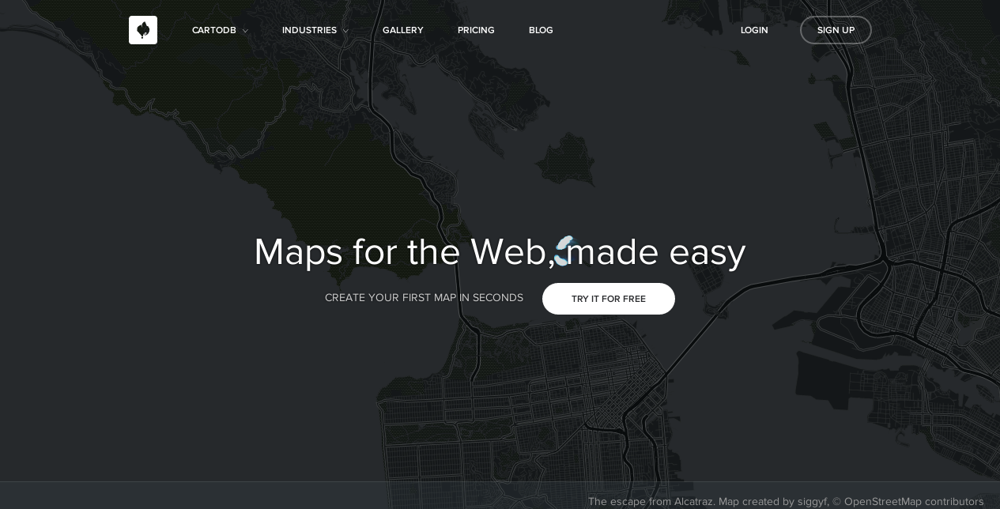
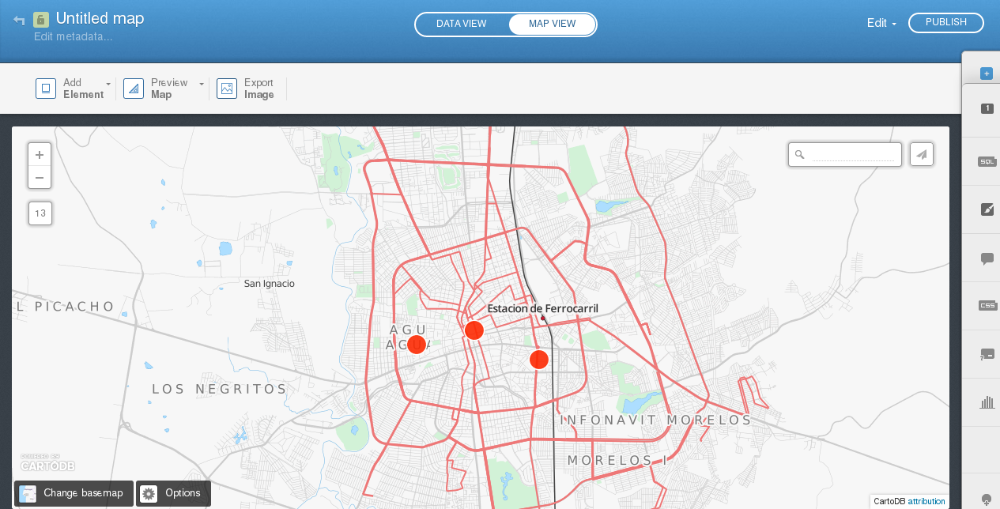
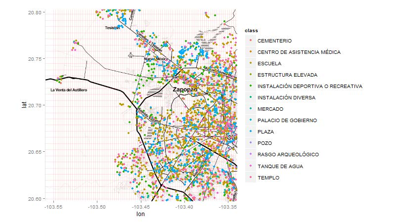
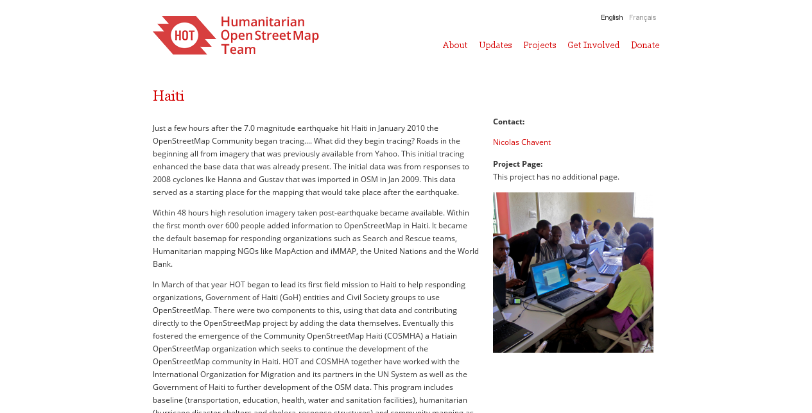
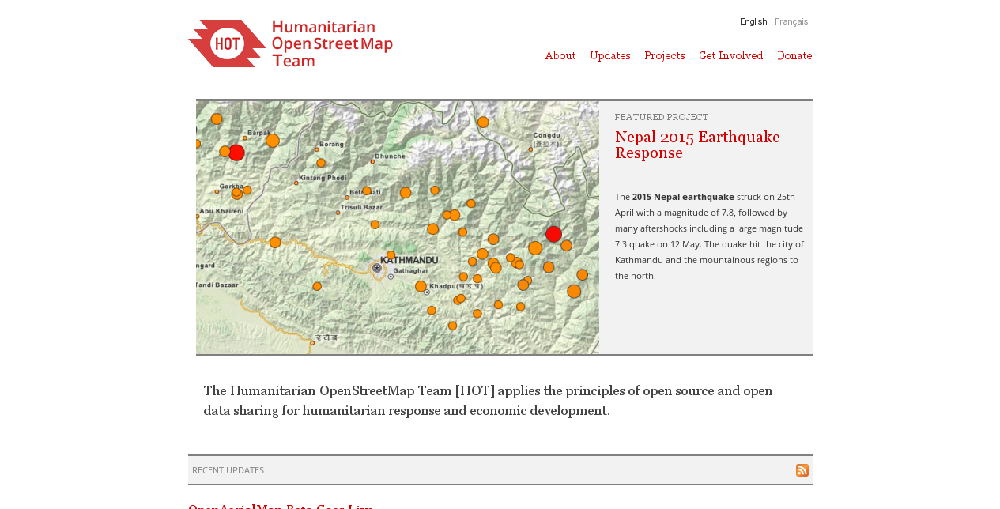

Temas
Elegir un tema segun lugar:
Black (default) -
White -
League -
Sky -
Beige -
Simple
Serif -
Blood -
Night -
Moon -
Solarized
Created by Andres Sabas / @sabasacustico
OpenData
Los datos abiertos son datos que pueden ser utilizados, reutilizados y redistribuidos libremente por cualquier persona, y que se encuentran sujetos, cuando más, al requerimiento de atribución y de compartirse de la misma manera en que aparecen.
Mapas Abiertos
Son todos aquellos mapas que se generan por medio de datos abiertos.
OpenStreetMap

OSM Editor
OSM Editor
Mapbox
Mapbox Editor
Mapillary
Mapillary
CartoDB
CartoDB
¿Qué hace la gente?
Sistema de información geográfica GIS
Sistema de información capaz de integrar, almacenar, editar, analizar, compartir y mostrar la información geográficamente referenciada. En un sentido más genérico, los SIG son herramientas que permiten a los usuarios crear consultas interactivas, analizar la información espacial, editar datos, mapas y presentar los resultados de todas estas operaciones.
Mapa 8 bits, 8bitcity.com
Comunidades Aguascalientes
Bicicletas, opencyclemap.org
Ciudades 3D, osmbuildings.org
OSRM, map.project-osrm.org
OSRM, map.project-osrm.org
Ayuda en Haiti
The Humanitarian OpenStreetMap Team
Ayuda en Haiti
Discapacitados
Clever Quotes
These guys come in two forms, inline:
“The nice thing about standards is that there are so many to choose from”
and block:
“For years there has been a theory that millions of monkeys typing at random on millions of typewriters would reproduce the entire works of Shakespeare. The Internet has proven this theory to be untrue.”
Global State
Set data-state="something" on a slide and "something"
will be added as a class to the document element when the slide is open. This lets you
apply broader style changes, like switching the page background.
Much more
- Right-to-left support
- Extensive JavaScript API
- Auto-progression
- Parallax backgrounds
- Custom keyboard bindings